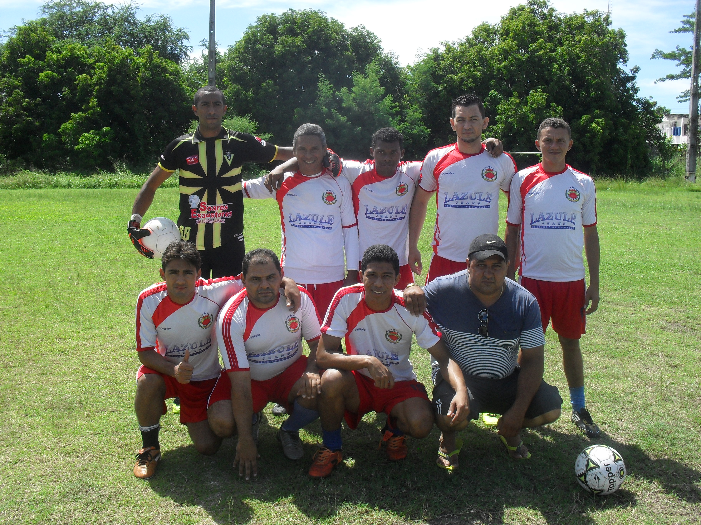

SOCIEDADE ESPORTIVA
PALMARES
Paixão, tradição e união dentro e fora de campo.
Conheça nossa história
Paixão, tradição e união dentro e fora de campo.
Conheça nossa históriaA história do Palmares começa em 1986 - ano de copa do mundo - e como de costume, futebol era o assunto nas mesas de bar. E foi em uma dessas mesas que tudo começou. Era meio dia de um sábado - o mês não se sabe ao certo - o bar era o “Jacaré”, localizado na av. Centenário, próximo ao aeroporto de Teresina. Encontravam-se numa mesa, falando de futebol, Aurélio, Nem, Paulo Afonso, Valdenor e “in memorian” Bira e Pery Machado. A discussão era saber quem jogava mais. Então surgiu a proposta de apostarem uma partida de futebol. O jogo foi marcado para a tarde do sábado seguinte, no campo do sanatório Meduna. Entre os fundadores, estes são alguns que também participaram do primeiro jogo: Rubens, Ademilton, Célio, Mauricélio, Fontenele, Dionísio, Waltinho, Laércio, Santana, Itamar, Aquino, Zé Wilson, João Carlos e outros. Após o jogo, a turma se reunia no “boteco” do Sr. Antônio, que ficava em frente ao Meduna, para conversar e, claro, tomar aquela gelada. E foi assim que o grupo surgiu.
